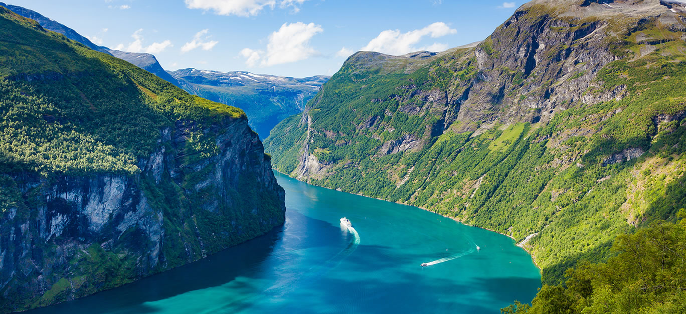
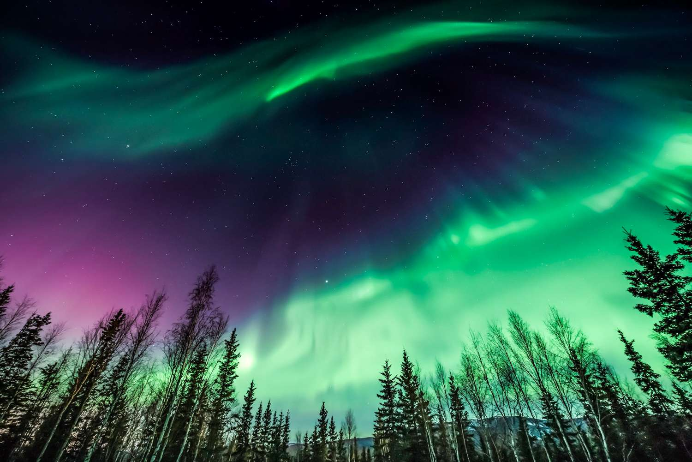

Fjords
A fjord is a long, deep, narrow body of water that reaches
far inland. Fjords are often set in a U-shaped valley with
steep walls of rock on either side. Fjords are found mainly
in Norway, Chile, New Zealand, Canada, Greenland, and the
U.S. state of Alaska.
A forest
The word forest broadly describes an area that has a large number of trees.
There are three general types of forest that exist: temperate, tropical,
and boreal. Experts estimate that these forests cover approximately
one-third of Earth's surface.

Northern lights
The northern lights most commonly occur within
the geographic area beneath the auroral oval. It encompasses latitudes
between 60 and 75 degrees and takes in Iceland, northern parts of Sweden,
Finland, Norway, Russia, Canada and Alaska as well as southern Greenland.

Mountains
The northern lights most commonly occur within
the geographic area beneath the auroral oval. It encompasses latitudes
between 60 and 75 degrees and takes in Iceland, northern parts of Sweden,
Finland, Norway, Russia, Canada and Alaska as well as southern Greenland.